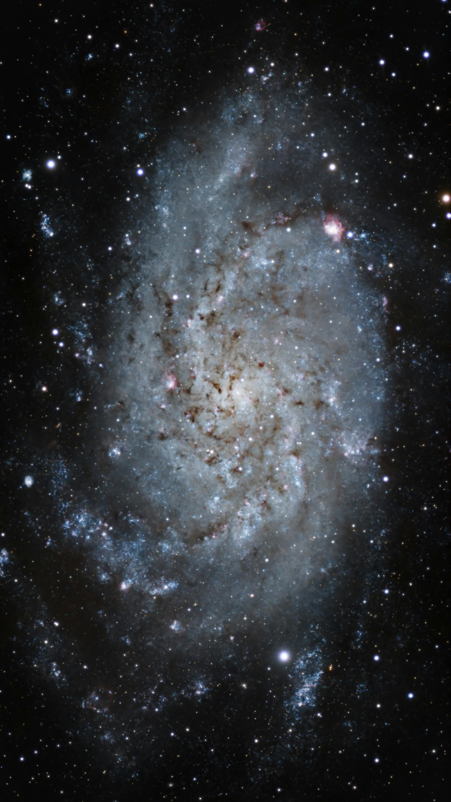

Why media matters
Images, videos, and audio can help users understand scientific topics more easily. They also make the website more engaging and enjoyable to explore.

Images, videos, and audio can help users understand scientific topics more easily. They also make the website more engaging and enjoyable to explore.